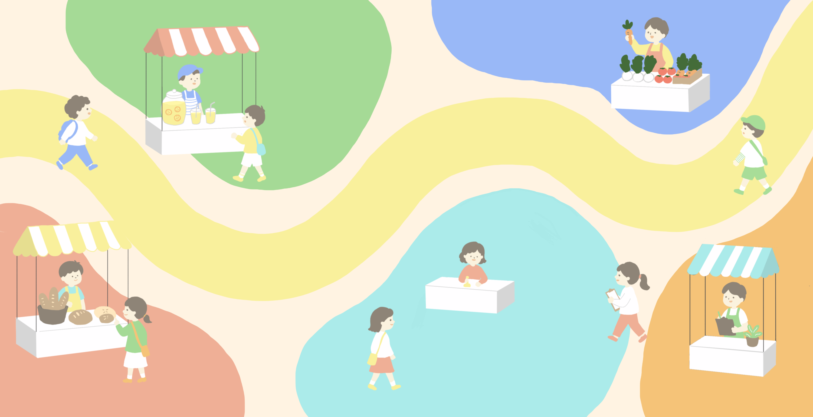

2026年11月21日（土）・22日（日）開催！
7〜15歳の子どもだけが市民になれる、小さな町。
お仕事して、税金を払って、自分たちのまちをつくる。
ここほかで、本物の「社会」を体験しよう！
WHAT IS KOKOHOKA?
7歳〜15歳の子どもが市民として登録。自分たちで運営する「まち」がここに生まれます。
まちの中にはいろんなお仕事があります。働いてもらったお給料で、遊んだりごはんを食べたりできます。
税金の使い道も、まちのルールも、子どもたちが話し合って決めます。本物の民主主義を体験します。
4TH YEAR
今年2026年は、過去に参加した子どもたちの中から「こども実行委員」が立ち上がりました。
自分たちがもっと楽しめる町をつくるために、子どもたちが主体となって準備をしています。
敬和学園大学の大岩ゼミが運営をサポートしています。
WHO CAN JOIN?
7歳〜15歳の子どもが対象。まちに市民登録して、2日間の体験に参加できます。
大人・大学生もボランティアとして参加できます。子どもたちのサポートをお願いします。